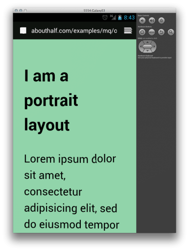
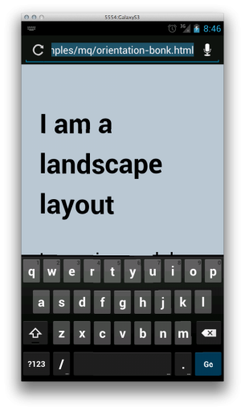

{kind=link}
{kind=link}
{kind=link}
-
Tips For Optimizing SVG Delivery For The Web
Interesting article with tips for optimizing SVG graphics for the web. My favorite trick is using the OBJECT tag to deliver an SVG file while nesting a DIV tag with a css background image within the OBJECT tag as a fallback for older browsers. This prevents extra HTTP requests on SVG supporting browsers (they don’t […]
-
Default system fonts on mobile platforms
Tinytype is a great resource, charting all the system fonts available on major mobile platforms.
-
Conditional comments unsupported in IE11‘s emulator
Since version 9, Internet Explorer has included some very good developer tools, including an emulator which allowed you to view a web page using an earlier version. This allowed for you to do quick and dirty testing of your site in various versions of IE. However, IE 11’s emulator does not support conditional comments. “Conditional […]
-
Understanding CSS pixel measurements
In CSS, “px” is not an angular measurement and it is not non-linear.
-
Chris Bowler compares Cloud.typography and Typekit
Chris Bowler compares the major features of Adobe’s Typekit web font service and Cloud.typography from H&FJ. The verdict: Typekit may be somewhat better suited to the personal or smaller site. Both are great. H&FJ is proud of their Screensmart Fonts. via Shawn Blanc.
-
This small ruby program takes a folder full of SVG files and creates an icon font for use on the web. Neat!
-
CSS3 width and height media queries work best with relative units Skip the details, show me the code In CSS the “@media” rule defines a block style rules which only apply to a given medium like print or on screen. /* These styles apply when the web page is printed */ @media print { body […]
-
I ran across this funny tweet in my timeline the other day. <table> <tr> <td> <h1>1999 <div class=“container”> <div class=“row”> <div class=“span6”> <h1>2010 via @bobearth I’m not going to lie; I LOLed. But, it stuck in my mind like a pebble stuck in my sock. Because, while anyone who actually made websites in the 90’s […]
-
Laura Kalbag discusses “display: none;” and responsive design
display: none; Or The things you think are common knowledge but really they aren’t..
-
One of my last duties at my previous job was to migrate the site’s CSS into the Bootstrap CSS framework. By “duty” I mean “project I pitched and advocated for a whole lot”. Bootstrap is eerily similar to the CSS framework I had cobbled together over my time there, only much better written (Bootstrap has […]
When the software keyboard is displayed in Chrome for Android or the stock Android Browser[1] the browser window is resized, which triggers a window.resize event and a window.orientationchange event in JavaScript as well as possibly causing CSS media queries to be reapplied.
In iOS, the software keyboard is overlaid over the browser window, so this effect is not seen[2]. The browser window stays the same size, so no events are fired and no media queries are reevaluated.
Both approaches attempt to solve the problem of big keyboards on limited screen sizes, and both methods are generally fine. There are some edge cases that can trip up the Android browser, though.
Usually, it’s fine. Except when it’s not.
When an Android browser views a website that hasn’t been optimized for mobile browsers, the content is typically zoomed out when the page is loaded. If the keyboard is displayed, that just means that some of the page is obscured, and there’s farther to scroll.
This is, also, rarely a problem for most responsive web sites. Most of the time responsive web site designs test for the width of the screen and reformat accordingly. No concern is given to the height of the screen or the orientation of the device. It’s assumed that a user can scroll regardless of the orientation of the device.
It’s possible you’d never run across this problem until you got fancy with your layouts.
Bonk
Web applications[3] which have a different layout for both portrait and landscape orientation can break when the keyboard is displayed.
Browsers on the Samsung Galaxy S3 see a maximum logical screen size of 360px wide by 720px tall in portrait orientation (as reported by JavaScript). When the keyboard is displayed, the viewport dimensions change to 360px wide by 301px tall. Likewise the Droid Razr goes from 360px wide by 640px tall to 360px by 253px tall when the keyboard is displayed. This makes the available screen size appear to the browser to be a slightly squarish landscape orientation.
Any media queries testing for “orientation: landscape” will now apply and potentially break the layout.
These screen captures of the Android emulator show the effect in action.
 Portrait works just fine.
 Landscape works too
Landscape works too
 Uh oh, bonk.
If you have an Android phone, you can try it here. Load the page and then tap the address bar to bring up the keyboard.
How to fix
JavaScript is of little help in this situation because the window.orientationchange event fires before the window updates its innerWidth and innerHeight properties (on Android). So while you could detect an orientation change, you won’t know the dimensions without using timeouts or other trickery.
It would be possible to use the window.resize event to capture the updated window size, but window.resize is triggered a lot and may be triggered by things other than an orientationchange event.
Even if there is a reliable JavaScript solution, it’s no fun having style and layout information in two places. It’s better to fix this in the media queries in the CSS.
Aspect Ratio
In CSS3 media queries, an aspect ratio expression tests for the ratio of the width to the height of the given media. If you were developing web content for wide-screen HD televisions you might test for a 16 to 9 ratio.
The media query expressions “orientation: landscape” and “orientation: portrait” are just short-hand for aspect ratio tests. If you wanted to use aspect ratio to test for landscape media, you could use the following:
@media screen and (min-aspect-ratio: 1/1) { /* landscape styles here */}
This just means “whenever the width is greater than the height, apply these styles”. Likewise a portrait media query could be written like this:
@media screen and (max-aspect-ratio: 1/1) { /* portrait styles here */}
Which means “whenever the width is less than the height, apply these styles”. Both of these media queries are equivalent to “orientation: landscape” and “orientation: portrait” respectively.
To solve the twitchy keyboard problem, we need to replace blunt catch-all terms like ‘portrait’ with an aspect ratio that captures our weird keyboard edge case.
From above, we know that the screen dimensions of the Droid Razr, in portrait orientation, with the keyboard displayed, are 360px by 253px. Divide 360 by 253 and you get 1.4 (rounded to the nearest tenth). While we could just write an aspect ratio media query like min-aspect-ratio: 360/253, that’s a little too specific to one device. So instead we’ll use 13 to 9. That also equals roughly 1.4 but it’s easier on the eyes.
For landscape media:
@media screen and (min-aspect-ratio: 13/9) { /* landscape styles here */}
And for portrait media:
@media screen and (max-aspect-ratio: 13/9) { /* portrait styles here */}
What we’ve done here is to say “anything that is portrait-to-slightly-landscape gets the portrait styles, anything wider gets landscape styles”.
This solves the, very specific, problem without resorting to blunt JavaScript force and is harmless to other platforms. This method also combines well with other media query expressions, like max-width, so it can be limited to large or small screens without a problem.
When to use this
As I mentioned above, you probably haven’t run across this problem. If you’ve got a “normal” layout that assumes scrolling and doesn’t change (much) between landscape and portrait (except for the width) then this is of no concern to you.
The problem is only going to show up when you have highly precise portrait and landscape layouts for a web site or application, which require text entry in a form field, which triggers the display of the keyboard, and then breaks your layout.
-
I’ve tested this on phones, but I believe the same thing happens on tablets. ↩
-
This may not be the case with all iOS apps, though. Apps like ByWord appear to reduce the editable area when the keyboard is visible. ↩
-
I say “web application” here because it’s unlikely that a content driven website would have drastically different layouts for portrait and landscape. “Applications” have different use cases and may need those different layouts. ↩